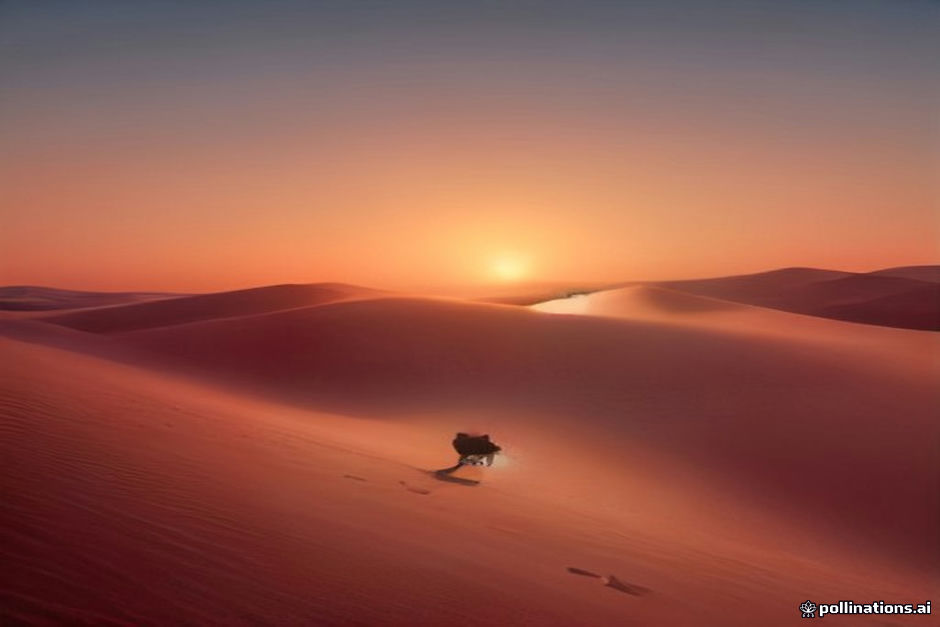

The drive from Marrakesh to the Erg Chebbi dunes takes roughly ten hours of actual driving spread over two days. Your driver will stop at roadside cafes and tourist restaurants along the Tizi n'Tichka, through Ouarzazate, and down the Draa or Ziz valleys. These stops exist because there are few alternatives on long stretches of mountain and plateau.
Hygiene varies. Major tour stops are generally safe, while small village kitchens can be excellent or risky depending on the day. Here is how we think about meals on the road after years of driving travelers back and forth.
Understanding standard tour stops
Most tours pull into large roadside complexes near Telouet, Ouarzazate, or the Dades and Todra gorges. They are built for volume: big dining halls, clean western-style toilets, and souvenir shops. High turnover usually means fresh ingredients, but the food is often precooked and held warm: tagine, omelets, and brochettes at 80 to 140 MAD per person.
The trade-off is predictability. You get reliable facilities and a table for the whole group, but you pay tourist prices for food that rarely resembles home cooking.
- Clean restrooms are usually available at the large complexes.
- Dishes are often prepared ahead for busloads.
- Expect 80 to 140 MAD for a standard lunch menu.
Local cafes and skewer grills
If you want fresher food, ask the driver to stop at a local town cafe or roadside grill — a snack — in places like Tinghir or Rissani. You can order kefta or beef skewers grilled over charcoal in front of you, often with a chopped salad. Meat butchered that morning and grilled to order carries much less risk than food sitting under a lamp.
The setting is more basic: rustic dining rooms, flies in warm months, and no English menu. The food is usually better and costs 40 to 70 MAD. Look for places with local families and truck drivers, and make sure your meat goes on the grill after you order.
- Choose places with high local patronage.
- Order meat that is grilled to order, not reheated.
- Skip pre-sliced tomatoes and salads sitting uncovered.
Water, ice, and fresh produce
Tap water outside the major cities is not recommended for visitors, and roadside restaurants are no exception. Drink sealed bottled water and use it for brushing your teeth. Ask for drinks without ice in rural areas, since ice is often made from untreated tap water.
Raw vegetables and unpeeled fruit are the most common cause of traveler's diarrhea. If you order a tomato and onion salad, make sure it was washed in safe water — or stick to cooked tagines, roasted peppers, and oranges you peel yourself. Buy sealed bottles from grocery shops when you can, and carry hand sanitizer.
What to eat and what to skip
A tagine that arrives bubbling hot in a closed clay vessel is the safest bet on any menu. Avoid lukewarm tagines that have been waiting on a counter. Grilled meat is fine if you see it cooked after ordering, and bread is served everywhere but handled frequently, so use sanitizer before eating.
- Order hot, bubbling tagines.
- Skip raw salads unless you trust the water used.
- Peel your own fruit.
Managing dietary restrictions
Vegetarians and vegans can eat along the route, but variety collapses quickly. Vegetable tagine and harira soup are everywhere, though meat stock is sometimes used as a base. Gluten-free travel is harder: bread comes with every meal, and flour is used to thicken sauces. Tell your operator at booking so the driver knows which kitchens can accommodate you. Our dietary restrictions guide goes deeper.
Building your own snack kit
Do not rely entirely on scheduled stops. Village groceries and markets sell nuts, dates from the Draa valley, clementines, and bottled water at fair prices. Stock up in Marrakesh or Ouarzazate. Keep hand sanitizer, tissues, and oral rehydration salts in your daypack — many roadside restrooms have neither soap nor paper.
- Buy dates, almonds, and fruit in transit.
- Carry wet wipes and hand sanitizer.
- Pack rehydration salts in case of a stomach upset.
| Tour bus stops | Local roadside grills | |
|---|---|---|
| Food quality | Precooked, standardized | Grilled fresh to order |
| Sanitation | Reliable western toilets | Basic, variable facilities |
| Price range | 80 - 140 MAD per meal | 40 - 70 MAD per meal |
| Atmosphere | Busy and tourist-centric | Local and rustic |
| Wait time | Fast, pre-prepared | Moderate, cooked fresh |

Illustration, not a photograph — for the real thing, you'll have to stand on the ridge yourself.
Quick answers
A few follow-up questions travelers ask about this.
Will I get sick eating at roadside stops between Marrakesh and Merzouga?
Serious food poisoning is uncommon if you stick to hot, freshly cooked food such as tagines and grilled meat, and avoid raw salad greens washed in tap water.
Can I buy snacks along the mountain pass?
Yes. Small village shops sell biscuits, water, nuts, and fruit, though options become scarcer once you cross into the desert plains.
Are vegetarian options available at tour stops?
Vegetable tagine and omelets are available almost everywhere, but variety is limited along the main tourist corridor.
Are roadside restaurant toilets clean?
Major tour stops keep western-style restrooms, often for a small tip. Rural cafes may only have squat toilets, so carry your own paper and hand sanitizer.
Can I bring my own snacks for the drive?
Yes, and it is a good idea. Nuts, dried fruit, and biscuits bought in Marrakesh cover the long stretches of the High Atlas where stops are infrequent.
Planning your own route?
Tell us your dates and what matters to you — we'll answer with a straight recommendation, not a brochure.
Send an inquiry See the itineraries